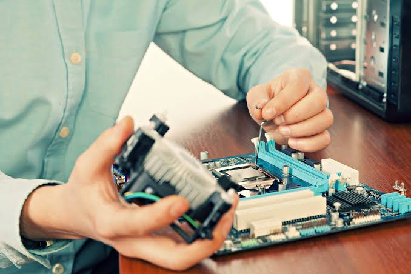

Hardware
Estudei como um computador é estruturado por dentro e qual é o papel de cada peça no funcionamento da máquina. Analisei componentes essenciais como processador, memória RAM, placa-mãe, armazenamento (HD e SSD) e fonte de alimentação, aprendendo a verificar a compatibilidade entre eles. Esse conhecimento foi fundamental para entender como os dados são processados e como cada peça influencia diretamente no desempenho final do computador.
Arquitetura e Componentes
Estudei como um computador é estruturado por dentro e qual é o papel de cada peça no funcionamento da máquina. Analisei componentes essenciais como processador, memória RAM, placa-mãe, armazenamento (HD e SSD) e fonte de alimentação, aprendendo a verificar a compatibilidade entre eles. Esse conhecimento foi fundamental para entender como os dados são processados e como cada peça influencia diretamente no desempenho final do computador.
Montagem e Manutenção
Participei de aulas práticas diretamente no laboratório para aprender a montar e consertar computadores do zero. Nas atividades, realizei a desmontagem completa das máquinas, fiz a limpeza interna, identifiquei peças com defeito e montei tudo novamente organizando os cabos e conexões. Também pratiquei a instalação e configuração básica dos sistemas operacionais para deixar os equipamentos prontos para uso.
Eletrônica Básica e
Tive meus primeiros contatos com a eletrônica e a programação de hardware utilizando placas Arduino e protoboards. Aprendi a montar circuitos simples com resistores, LEDs, botões e sensores básicos, entendendo como a corrente elétrica funciona na prática. Com isso, dei os primeiros passos na lógica de programação embarcada, fazendo o código interagir diretamente com componentes físicos.
